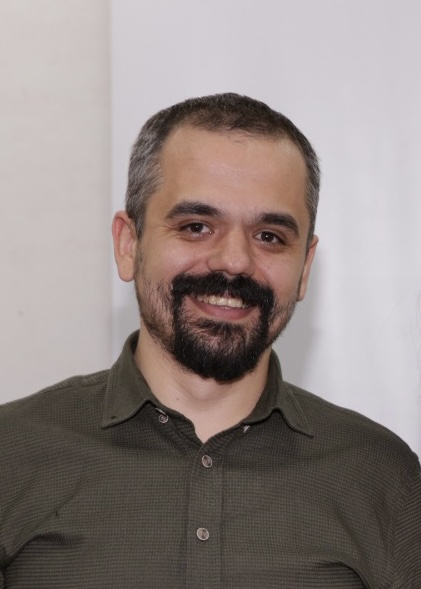

Emre Emekli
Dr. Emre Emekli is an Assistant Professor in the Department of Radiology at Eskişehir Osmangazi University. He has completed his doctoral studies in Medical Education at Gazi University. His expertise lies in musculoskeletal radiology, and he has a growing interest in the application of measurement and AI tools within medical education. Dr. Emekli remains dedicated to advancing post-graduate radiology education while actively contributing to improving clinical record-keeping education.
